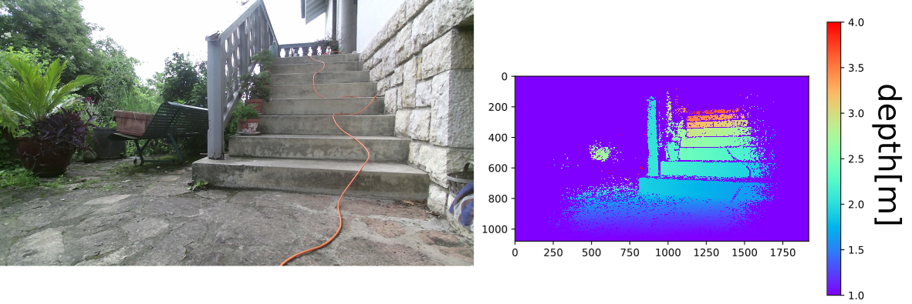

3D Vision for a Robotised Wheelchair

Overview
This project was part a collaboration between EPFL (Biorob laboratory) and C. Cazali, aiming to develop a robotised wheelchair with an hybrid legged-wheeled locomotion and obstacle crossing capabilities.
Problem Statement
From previous students works, a model was implemented in simulation, with obstacle crossing working in a 2D space (xz), with a ground truth knowledge of the obstacles positions and dimensions. My project aimed to extend this to a 3D navigation scenario, using on-board depth imagery for the obstacle perception. I was then to review and select a physical sensor, in view of real world experiments. This represented 14 weeks of full time work.
Approach
After extending the obstacle crossing to handle 3D navigation cases, I reviewed the state of the art for obstacle perception, and highlighted the need for a mapping strategy to aggregate the sensor's measures over time. As this is a well researched topic, I looked at the available open sources implementations, and selected the elevation mapping approach developed by ETH Zürich and Anybotics, which was the more adapted to our use case.
I then interfaced the simulated sensory data with the mapping algorithms using ROS, creating a 2.5D map of the environment around the robot from the sensory input.
After that, I solved the challenges inherent to our application, handling self-occlusion, low confidence measures and computing the obstacle representation required by the crossing algorithms while minimizing the time lag. This allowed the robot to clear multiple obstacle crossing scenarios, relying solely on real time perception for the obstacle estimation.

Sensor Selection
Next, I chose the physical sensor after reviewing the available depth sensing technologies in regards to outdoor use, driver availability and budget. After the purchase of a 2nd generation refurbished kinect, with depth sensing based on Time-of-Flight technology and a complimentary RGB image, I adapted existing calibration scripts for OpenCV 4. I then tested the now calibrated sensor on outdoor scenes, and interfaced it with the rest of the project.
I then experimented with visual and motor odometry, laying the foundations for future work regarding the localisation of the robot.
Results
With this work, I was able to provide a proof of concept on the solutions for obstacle perception with on-board imagery, combining and adapting multiple state of the art approaches to the LWS project.